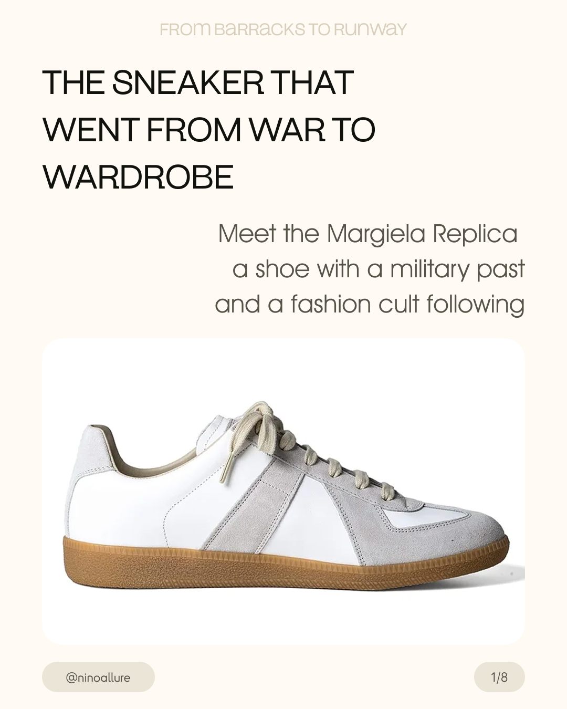
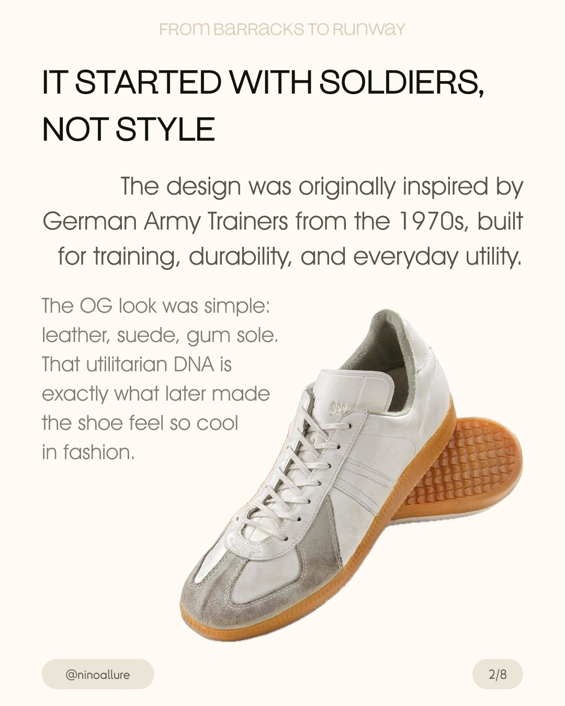
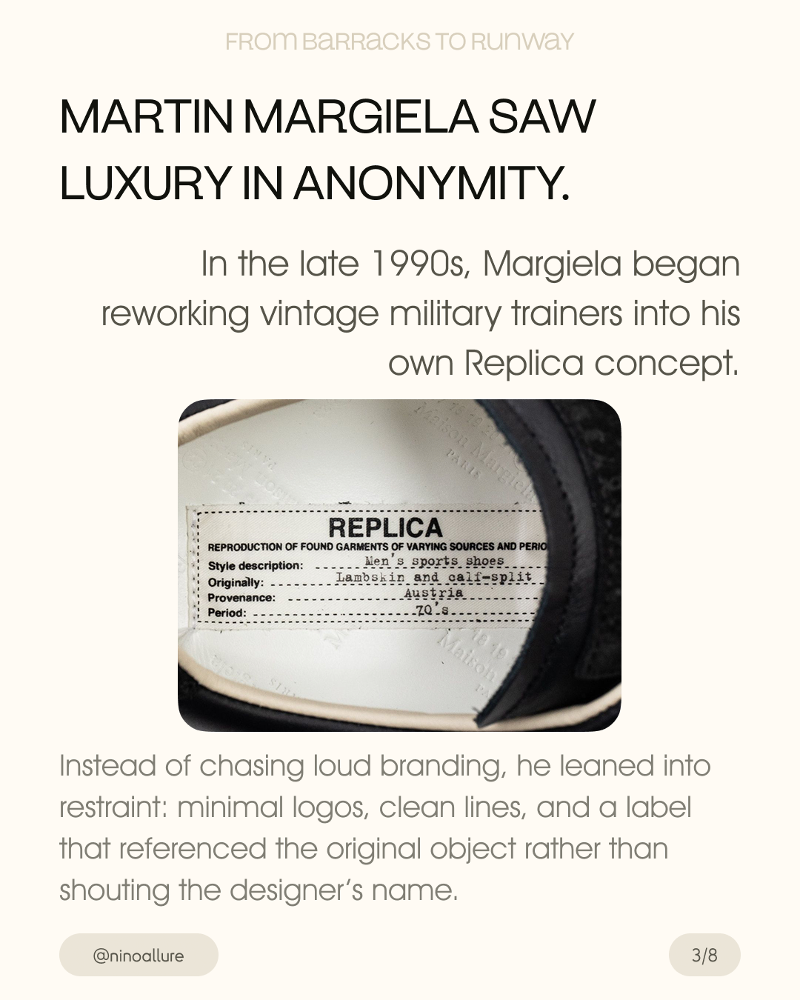
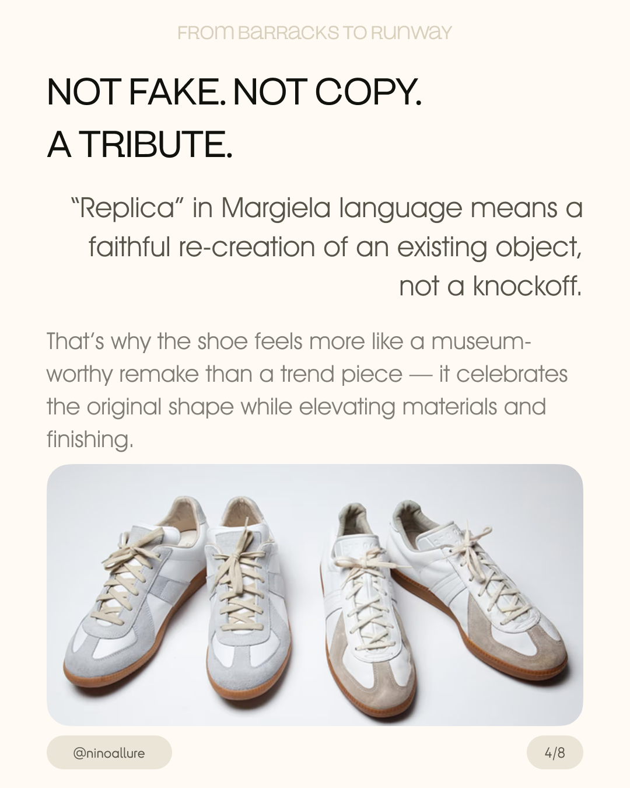
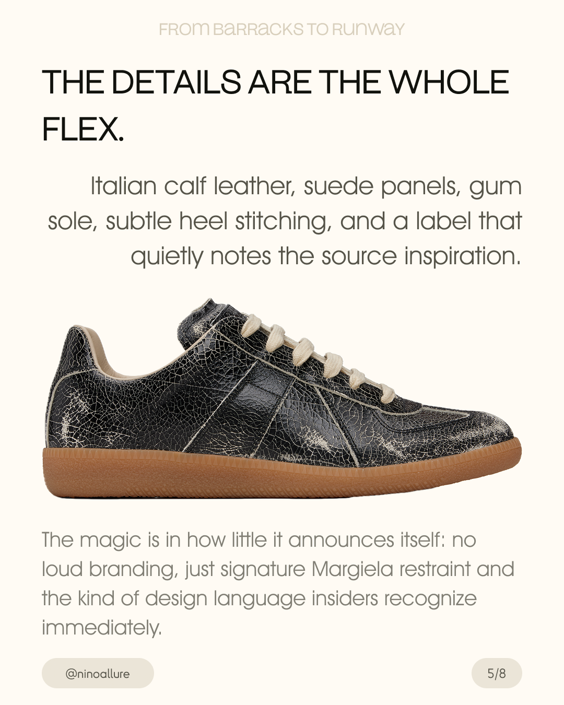

editorial case study on the Margiela Replica — a sneaker that moved from military utility into fashion culture
visual research / fashion storytelling / 2026

the German Army Trainer (GAT) was originally developed in the 1970s as a standard-issue indoor training shoe for the Bundeswehr. built for durability, everyday utility, and minimal cost — leather upper, suede panels, gum rubber sole. decades later, this anonymous piece of military equipment would become one of fashion's most quietly iconic objects.

in the late 1990s, Martin Margiela began reworking vintage military trainers into his own Replica concept. rather than chasing loud branding, he leaned into restraint: clean lines, minimal logos, and a label that referenced the original object's provenance rather than shouting the designer's name.
the Replica label — stamped with "reproduction of found garments" — became a signature. it documented the source, material, and period, treating the sneaker as a museum piece rather than a product.

"Replica" in Margiela language means a faithful re-creation of an existing object — not a knockoff. the shoe celebrates the original silhouette while elevating materials and finishing: Italian calf leather, refined suede panels, subtle heel stitching. the magic is in how little it announces itself.


the Replica GAT became a cult favorite precisely because it looks low-key but carries serious fashion history. it became the shoe for people who know — recognized by insiders, invisible to everyone else.
Margiela's philosophy of found objects, uniforms, and deconstruction fits this piece perfectly: an ordinary shoe reintroduced as something new by changing context, material, and meaning.
a reinterpretation that respects the original while elevating it into a cultural object. same silhouette, totally different message.